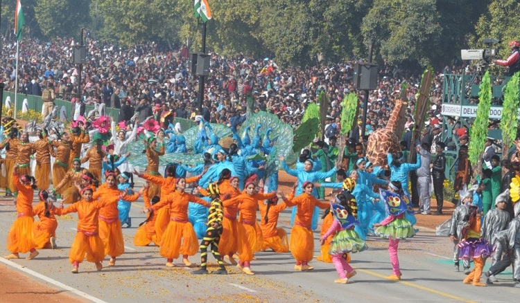

Welcome to Delhi!

Delhi, the capital city of India, is a vibrant and diverse metropolis that blends ancient history with modernity.
Known for its rich cultural heritage, historical landmarks, and dynamic lifestyle, Delhi offers a unique cultural
experience to its residents and visitors.
Festivals in Delhi are celebrated with great enthusiasm, reflecting the city's multicultural fabric. Diwali, the
Festival of Lights, sees the city illuminated with lamps, decorations, and fireworks. Holi, the Festival of
Colors, is celebrated with vibrant colors, music, and dance. Other significant festivals include Eid, Christmas,
Guru Nanak Jayanti, and Durga Puja, each celebrated with traditional rituals, feasts, and cultural performances.
The city also hosts the Republic Day Parade, showcasing India's military might and cultural diversity.
The cuisine of Delhi is a delightful mix of Mughlai, Punjabi, and street food flavors. Iconic dishes include
Butter Chicken, Chole Bhature, Biryani, and Kebabs. The city's street food scene is legendary, with offerings like
Chaat, Golgappas, Parathas, and Jalebis. Chandni Chowk, one of Delhi's oldest markets, is a food lover's paradise,
offering a wide variety of traditional dishes. The city's culinary landscape also includes international cuisines,
reflecting its cosmopolitan nature.
Music and dance are integral to Delhi's cultural life. Classical music and dance forms like Hindustani classical
music, Kathak, and Bharatanatyam are regularly performed at cultural festivals and events. The city's vibrant arts
scene also includes contemporary music, dance, and theater, with venues like the India Habitat Centre and Kamani
Auditorium hosting performances by renowned artists. The annual Delhi International Arts Festival showcases a
diverse range of artistic expressions from around the world.
Delhi’s architectural heritage is a testament to its rich history and cultural legacy. The city is home to several
UNESCO World Heritage Sites, including the Red Fort, Humayun's Tomb, and Qutub Minar. Other notable landmarks
include the India Gate, Lotus Temple, and Akshardham Temple. The blend of Mughal, British, and modern architecture
reflects Delhi's historical evolution and cultural diversity. The city's museums, such as the National Museum and
the National Gallery of Modern Art, offer insights into India's artistic and historical heritage.
Handicrafts in Delhi are renowned for their craftsmanship and variety. The city is a hub for traditional Indian
crafts, including handloom textiles, pottery, jewelry, and leather goods. Dilli Haat, an open-air market,
showcases handicrafts from different states of India, offering a unique shopping experience. The city's markets,
such as Connaught Place, Janpath, and Lajpat Nagar, are popular destinations for those seeking traditional and
contemporary crafts.
Overall, Delhi's culture is a dynamic blend of tradition and modernity. It offers a rich cultural experience
through its vibrant festivals, diverse cuisine, dynamic arts scene, and historical landmarks. The city's
commitment to preserving its cultural heritage while embracing contemporary influences makes Delhi a fascinating
and welcoming destination for travelers and culture enthusiasts alike.